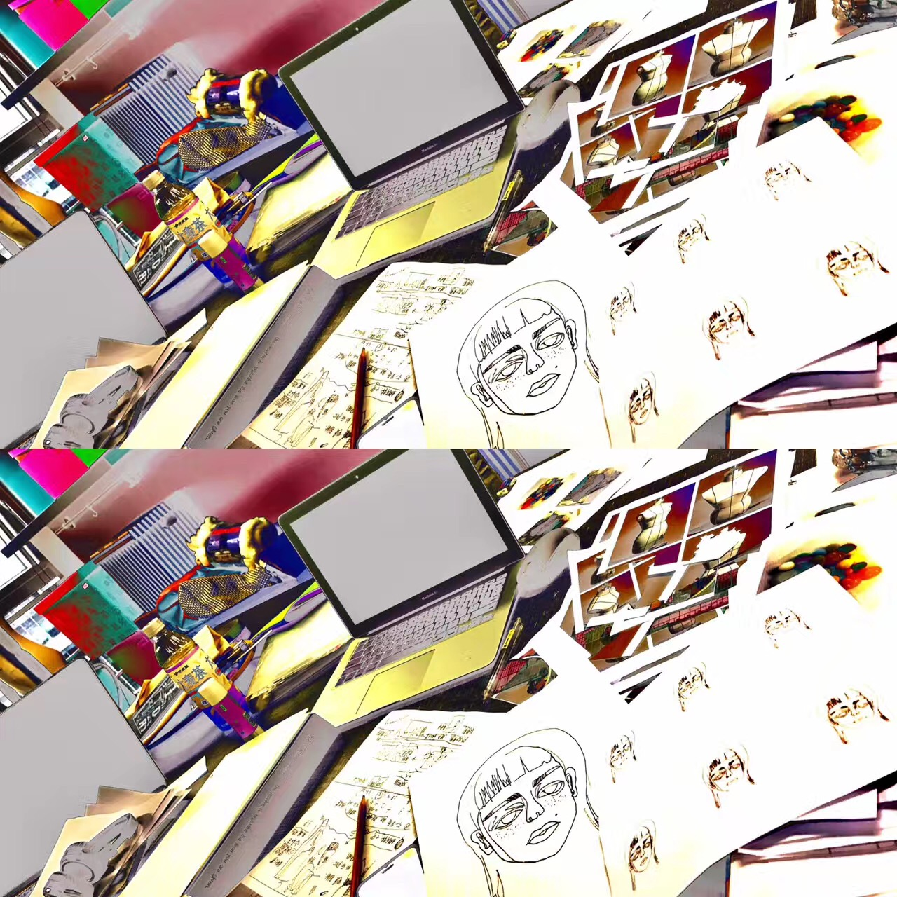
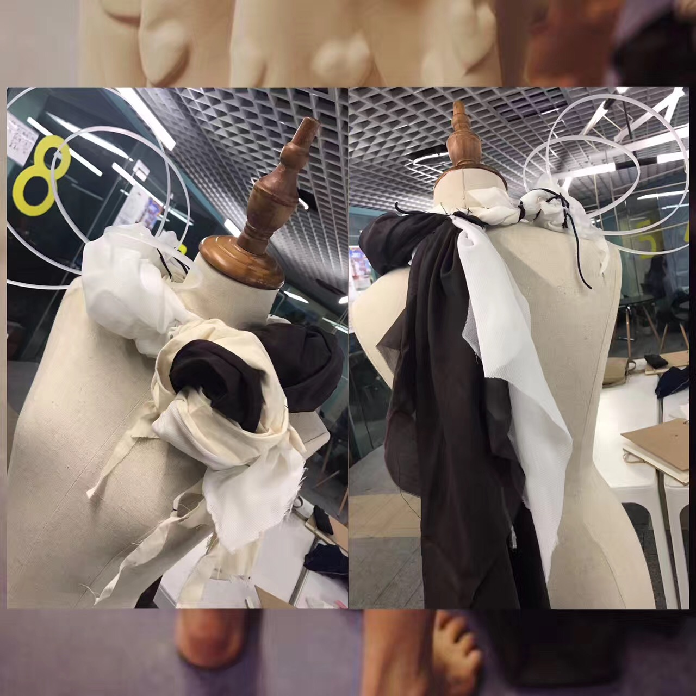

Spectral
Rosemary Zhong
Learn More
Introduction
Lorem
Ipsum
Dolor
Ipsum
My Introduction
Video Show
VIDEO EXTRAS for the modern jewelry project

PROJECT 1: THE SHACKLES
Everyone gets sick. I had a lumbar disc herniation when I was 20 years old. Disease is not scary, and we don't have to be afraid to expose our disease to people. Illness also made me more special and likeable...

PROJECT 2: STREET FASHION
I once met a beggar in a subway station. His clothes were all made up of patches. But after careful observation of the details, I find it shabby. but fascinating…